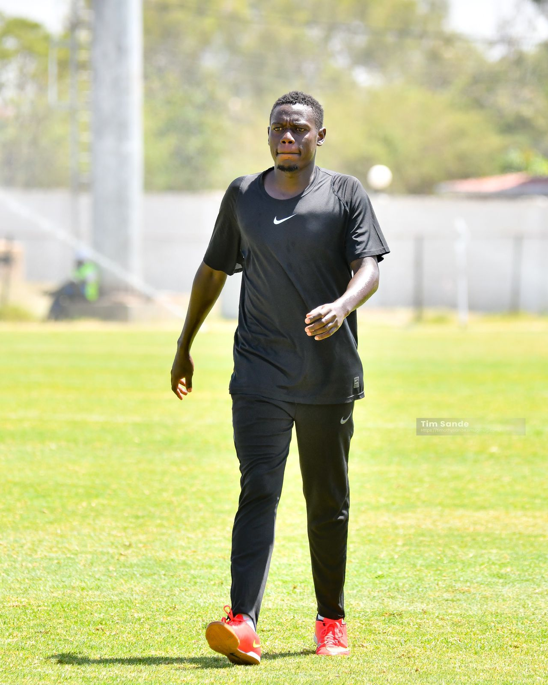

Meet the UEFA and CAF licensed professionals shaping the next generation.

I am Arnold Maina Omondi, popularly known as Coach Mich, a passionate football coach, youth mentor, and sports development practitioner dedicated to nurturing young talent and transforming lives through football. I am the Founder and CEO of Soccer Africa International Football Academy, an institution focused on developing technically gifted, disciplined, and socially responsible players for the future.
Over the years, I have worked with different teams and football programs across Kenya, earning recognition for leadership, tactical understanding, and commitment to youth empowerment through sports. I currently serve as the Head Coach of the University of Nairobi Football Team and have also worked as Assistant Coach at Leads United, where I contributed to winning major tournaments including the Betika Nairobi Region Tournament and the 82 Sports Tournament.
I am a certified football coach and sports management practitioner with qualifications and certifications that include:
My coaching philosophy emphasizes discipline, teamwork, technical development, mental strength, and creating opportunities for young players to grow both on and off the pitch.
Through Soccer Africa International Football Academy, my vision is to build a strong football culture that not only develops elite players but also promotes education, health, character, and community development among young people.
I remain committed to inspiring and mentoring the next generation of footballers by combining professional coaching, leadership, mentorship, and a deep passion for the beautiful game.
D.O.B: 13 June 1995
Position: Center Back
Playing Style: Leader / Stopper Type Defender
Current Club: KCB
I am Bartholomew Lisiye (Coach Kante). I'm 22 years old, a veterinary medicine and surgery student, and a football player. I've been playing football for almost 15 years till now. I am now a player at UoN Olympic that plays in the Nairobi Regional League.
I have played at the national and East Africa level for UoN and won the championship and second runners-up consecutively. I have also featured for Vapor Ministries, which plays in the Division 2 Kenyan league.
I have been coaching since 2025, taking up under-17 and under-13 players for various teams. I aspire to inspire young players as the older ones have inspired me. I also endeavour to play on greater stages to show the younger players that it is possible.
My name is Amolo Vincent, and I am a Youth Football Coach at Soccer Africa Academy with three years of coaching experience and over a decade of competitive playing experience as a goalkeeper. Throughout my playing career, I represented Greenpark FC, FC Premier, and Bondo United, and I helped Greenpark FC win a league title.
I specialise in goalkeeper training and focus on identifying, developing, and nurturing young talent from an early age. Through structured coaching and mentorship, I help players build their technical skills, confidence, discipline, and a lifelong passion for the game.
I am Coach David, commonly known as Yanke. I'm a Range Management graduate and AI data specialist with experience in image, video, and text annotation. I enjoy exploring emerging technologies, especially AI and innovative solutions that can address environmental and sustainability challenges.
In my free time, I like learning new digital skills, keeping up with technological trends, and expanding my knowledge across different fields. I am an artist and also a sports enthusiast, particularly soccer.